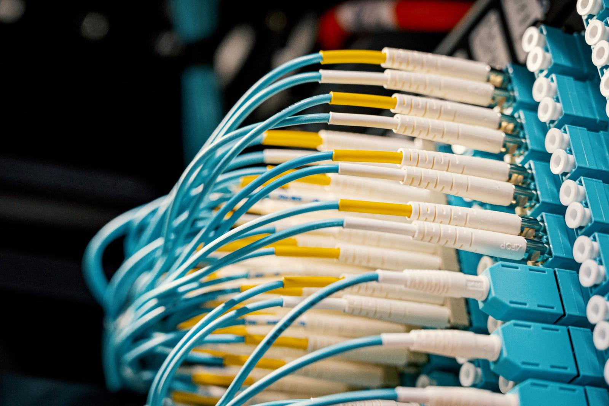
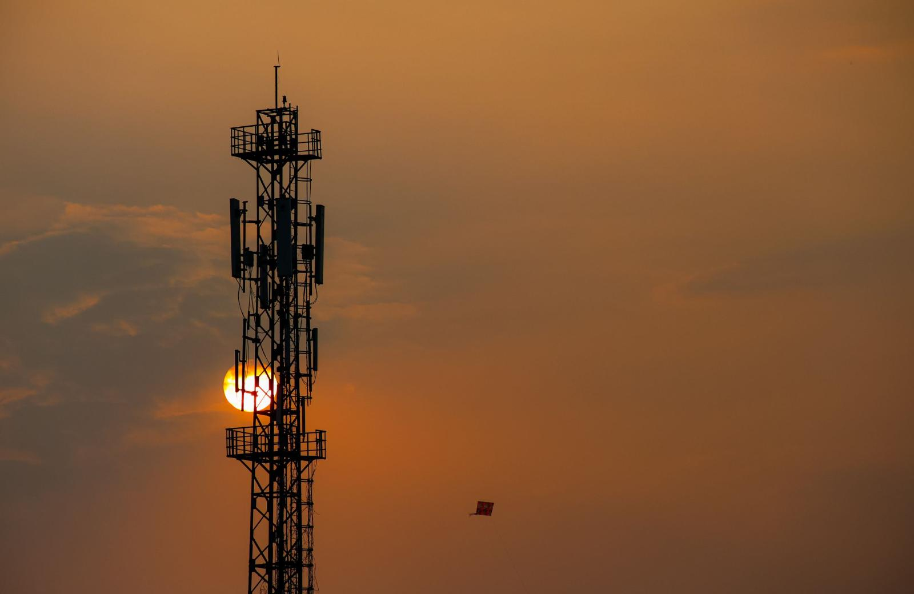
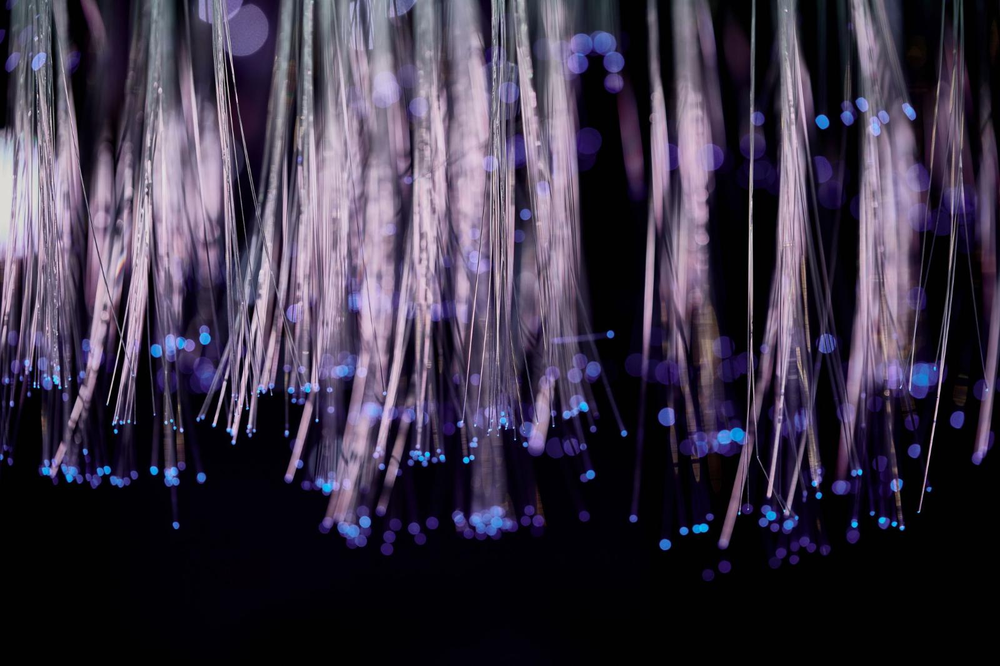
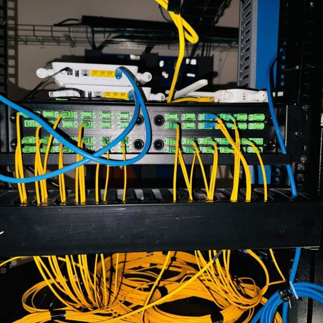
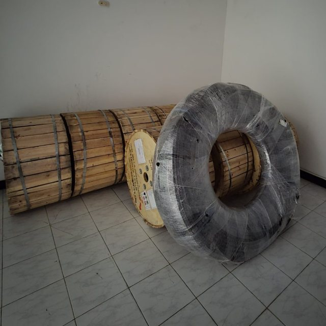

Internet dedicado, capacidad para proveedores de internet (ISP), radioenlace, torres y energía solar. Le suministramos la capacidad que necesite en cualquier municipio del Caquetá donde llegue la fibra óptica.
Conectividad e infraestructura con capacidad propia en el Caquetá: internet dedicado, capacidad para proveedores de internet, radioenlace, torres y energía solar.

01
Canal exclusivo
Internet dedicado
Canal exclusivo con la velocidad simétrica contratada, direcciones IP públicas, canal alterno de respaldo y soporte técnico en sitio. Le ofrecemos la capacidad que su operación requiera.
Dirigido a
Empresas, alcaldías, instituciones educativas y entidades del Caquetá.
02
Capacidad mayorista
Capacidad para proveedores de internet
Suministramos a proveedores de internet la capacidad que su red necesite, en cualquier municipio del Caquetá donde llegue la fibra óptica, con respaldo y acompañamiento técnico.
Dirigido a
Proveedores de internet (ISP) y operadores de telecomunicaciones de la región.
03
Zonas rurales
Radioenlace
Conexión por radioenlace en El Paujil, El Doncello y Cartagena del Chairá para fincas, veredas, empresas y sitios donde aún no llega la fibra óptica.
Dirigido a
Hogares rurales, fincas, empresas y sedes alejadas del casco urbano.

04
Sitios de difícil acceso
Torres e infraestructura
Construimos torres de telecomunicaciones y realizamos la obra civil, incluso en sitios remotos a los que solo se llega en moto, en lancha o a pie.
Dirigido a
Operadores, alcaldías y empresas que necesitan cobertura donde termina la carretera.
05
Energía renovable
Energía solar y redes eléctricas
Instalamos sistemas de energía solar y construimos redes eléctricas de media y baja tensión. Nuestra propia red opera con respaldo de energía solar.
Dirigido a
Fincas, veredas, nodos de telecomunicaciones y proyectos alejados de la red eléctrica.
01/05
Siga bajando
Proveedores de internet (ISP) y empresas
Capacidad para su red en el Caquetá
Tenemos la capacidad para suministrar a empresas y proveedores de internet el ancho de banda que requieran, en cualquier municipio del Caquetá donde llegue la fibra óptica.
La capacidad que necesite
Ancho de banda dedicado y escalable, de acuerdo con la demanda de su red o de su operación.
Red con respaldo
Canal alterno, respaldo de internet por fibra óptica y satelital, y nodos con energía solar.
Direcciones IP públicas
Para sus servicios, servidores y clientes, según el plan contratado.
Soporte técnico en la región
Personal técnico propio en el Caquetá y atención en sitio.
El municipio, el punto de entrega y la capacidad que requiere.
02
Le enviamos la propuesta
Verificamos la disponibilidad de fibra óptica y le presentamos la solución técnica y comercial.
03
Activamos el servicio
Instalamos, configuramos y lo acompañamos con soporte técnico.
La disponibilidad depende de la llegada de la fibra óptica al municipio y del punto de entrega del servicio.

Nuestra red
Infraestructura propia
Todo parte del nodo.
En cada nodo operan la OLT, el enrutador de núcleo y el ODF, donde llega la fibra de cada sector. Desde allí salen los cables troncales de 12 hilos hacia las cajas NAP de 16 puertos instaladas en los postes, y de cada caja sale la acometida hasta el usuario. La red cuenta con respaldo de internet por fibra óptica y satelital, y con respaldo de energía solar, que ayuda a mantenerla en operación durante los cortes de energía. Toda la red está georreferenciada, caja por caja.
01
Nodo
OLT, enrutador de núcleo y ODF en rack, con respaldo de energía solar.
02
Troncal
Cable de fibra óptica de 12 hilos tendido por la postería del municipio.
03
Caja NAP
Cajas de 16 puertos. Con un puerto disponible cerca de su predio, programamos la instalación.
04
Usuario
Acometida de fibra hasta el hogar o negocio y equipo wifi en préstamo (comodato).
Nuestra red, en fotos

01 · Nodo
ODF del nodo, con las fibras de cada sector

02 · Troncal
Carretes de fibra óptica de 12 hilos, antes del tendido